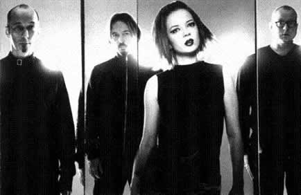
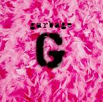
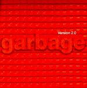
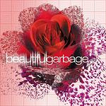
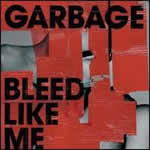
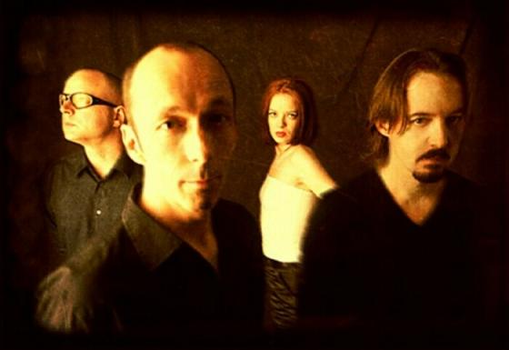
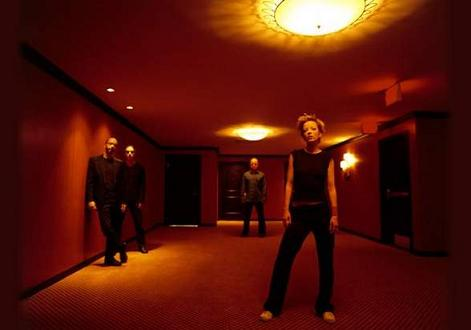
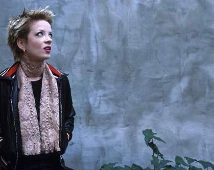

For a good while now, I have considered garbage to be my favorite band. These four human beings, generally recording in Madison, Wisconsin, have created some of the most amazing pieces of music since 1994. Butch Vig, legendary producer of Nirvana and The Smashing Pumpkins, along with buddies Steve Marker and Duke Ericson, sought to create a new sound. Upon viewing the video of a little known band named Angelfish, these guys got their first glimpse of the woman who would make it happen. Her name is Shirley Manson.

So the stage is set. Garbage is born! How did they get this name? Well, the legend tells it like this: while Butch was playing back a rough cut of "Vow" for a friend of his, his friend said, "This sounds like garbage!" Butch, realizing that his unique approach to production in its earlier stages really did sound like an amalgamation of sounds that just DIDN'T mesh, agreed, saying, "It is garbage!" Yes, my friends. I like garbage.

So here they come! Garbage has 4 albums. The first is their self-titled debut, Garbage. This was actually the second album of theirs that I bought. My favorite tracks include "I'm Only Happy When It Rains", "Vow", "Fix Me Now", and "Stroke of Luck." The lyrical quality maybe alittle sketchy at points, though the complexity and depth are surprisingly apparent. Then there was Version 2.0. This is arguably their best album and probably my favorite. The album has my favorite song ever, "You Look So Fine", and many other excellent selections, including "I Think I'm Paranoid", "Medication", and "Special." While the debut is good, Version 2.0 strongly resonates as a sound very distinct from its predecessor, defying the sophomore slump curse and giving garbage alot more room to innovate.
They did just that with Beautifulgarbage, their third album. Certainly the biggest departure from traditional garbage sound, the album still emits glimmers of the sound that came before it. Beautifulgarbage leaves us with some very cool songs like "Parade", "Cherry Lips (Go Baby Go)", and the deliciously haunting "Cup of Coffee". Though the album was the least successful of all of their offering (most likely attributed to its promotion beginning the very week of 9/11), it's still an excellent album. Their latest album, Bleed Like Me, returns the band to the more tradition sound that spawned them. Admittedly, it's a guitar record, but it takes to concept to a place only garbage can take it. Along with songs like "Bad Boyfriend", "Run Baby Run", "Why Do You Love Me", and "Happy Home", Bleed Like Me proves to be their most energetic and darkest album to date.
They did just that with Beautifulgarbage, their third album. Certainly the biggest departure from traditional garbage sound, the album still emits glimmers of the sound that came before it. Beautifulgarbage leaves us with some very cool songs like "Parade", "Cherry Lips (Go Baby Go)", and the deliciously haunting "Cup of Coffee". Though the album was the least successful of all of their offering (most likely attributed to its promotion beginning the very week of 9/11), it's still an excellent album. Their latest album, Bleed Like Me, returns the band to the more tradition sound that spawned them. Admittedly, it's a guitar record, but it takes to concept to a place only garbage can take it. Along with songs like "Bad Boyfriend", "Run Baby Run", "Why Do You Love Me", and "Happy Home", Bleed Like Me proves to be their most energetic and darkest album to date.

A necessity for any garbage fan is a little exploration into the world of garbage b-sides. There are tons! For every garbage album their seems to be a whole 'nother doppelganger album beneath it. B-side favorites for the first album include the first garbage song I ever heard, "#1 Crush", as well as the homage to the industrial rock band of the same name, "Alien Sex Fiend." Version 2.0 gives us some favorites like "13X Forever", "Deadwood", "Tornado", and the James Bond theme "The World is Not Enough." Beautifulgarbage kept the ball rolling with some very exceptional songs, like the lyrical "Use Me", the complex "April the Tenth", the simplistic "Confidence", and the odd "Happiness Pt. 2." Though a b-side compilation has always been promised, garbage fans still find themselves waiting on pins and needles for an album. Maybe, someday.

I've always really admired the lyrics of garbage. When I first heard "#1 Crush", I was hooked, but I didn't know to what. I was too young to really comprehend exactly what a "band" was. Years past and I bought Version 2.0 because it had alot of fun pop singles. I never really dived into the depth of the album until months after I bought it. I didn't figure out that garbage was my favorite band until one night, while watching a cheesy MTV game show called Webriot, the video for "Only Happy When It Rains" played. I was mesmerized! The next day I bought the first album, and the rest is history. I've gone to three garbage shows, one while they opened for U2 on November 31st, 2001, the second during the 2002 Music Midtown Festival in Atlanta, and the latest when they came to the Tabernacle in 2005 to support the release of Bleed Like Me. The Tabernacle show was different for me because it was the first full-blown concert. My dream is for, one day, going to a garbage show overseas (where I hear they really go all out).
I'm bound to be a fan for life, surely. I have to admit, during these four years at UGA, my fever for garbage has waned slightly. While I still consider them beyond compare, I'm not always listening to the Ms. Manson. I've really spread out my tastes beyond garbage to other really awesome bands like The Cure, New Order, The Flaming Lips, Fleetwood Mac, and The Smiths. I've also been known to listen to artists like Lauryn Hill, Madonna, and Elton John.
Since you survived that tirade, here's a Top 10 list of my favorite garbage songs along with reasons and also some of my favorite garbage lyrics.
I'm bound to be a fan for life, surely. I have to admit, during these four years at UGA, my fever for garbage has waned slightly. While I still consider them beyond compare, I'm not always listening to the Ms. Manson. I've really spread out my tastes beyond garbage to other really awesome bands like The Cure, New Order, The Flaming Lips, Fleetwood Mac, and The Smiths. I've also been known to listen to artists like Lauryn Hill, Madonna, and Elton John.
Since you survived that tirade, here's a Top 10 list of my favorite garbage songs along with reasons and also some of my favorite garbage lyrics.

My Personal Top Ten:
- 10. "Bad Boyfriend ": Even the band admits that it's a real breakthrough to start one of their albums with a song like this. This is an excellent song to listen to while cruising around in your car.
If you can't love me honey, go on just pretend
C'mon baby, be my bad boyfriend!
- 9. "Deadwood": A song I generally attribute to a failure to connect to someone, whether it be a friend or someone you really care about. The hidden lyrics at the beginning are great ("I kill the fire so I don't get burned / You kill the fire and you won't get burned..."), but the refrain is what really gets me:
Look me in the eye
I'm about to dive
Can you live your life
Without me?
- 8. "Parade": Why this song wasn't a single I don't know. I know people that bought Beautifulgarbage just for this song. This song is just bubbly and good, very good.
As far as I can tell it doesn't matter who you are
If you can believe in something worth fight for
The colour of an eye, the glory of a sudden view
The baby in your arms, the smile he always shoots at you...
- 7. "#1 Crush ": This was one of the first garbage songs I ever heard. It floors me that it's only a b-side—the lyrics are so amazing! Even though she reveals it early on, I'm always surprised by the ending:
I'd sink ships for you
To be close to you
To be part of you
'Cause I believe in you
I believe in you
I would die for you.
- 6. "Happy Home ": There's always something about the final song on a garbage album that really encapsulates the album. This is no different. The band saw it as the calm after the storm. Before completing Bleed Like Me, they almost broke up.
I see it as a bit of the opposite. Maybe one day, we can all go home again.
In my lover's arms, I wait for morning
I beg my god to speak and tear me apart
I´d lay down my body, I´d lay down my arms
I never once in my sweet short life meant anybody harm...
- 5. "Only Happy When It Rains": The song that started it all for me. This song acts as a rationale for life, very much based on the poetic theme of masochism.
I only smile in the dark
My only comfort is the night gone black
I didn't accidentally tell you that
I'm only happy when it rains
You'll get the message by the time I'm through
When I complain about me and you
I'm only happy when it rains!
- 4. "Cup of Coffee": Lyrical masterpiece of Beautifulgarbage, exhibiting a stream of consciousness, so random and emotionally weighted, as the listener, you can feel the pain and it's power. This song is so powerful, it's extra-terrestrial.
You left behind some clothes
My belly summersaults when I pick them off the floor
My friends all say they're worried
I'm looking far too skinny
I've stopped returning all their calls
- 3. "Vow": Basically a message to the world, an ultimatum, a song for the triumphant underdog, and the ultimate testament to garbage sound. This is garbage, people, this is life.
I can't use what I can't abuse
And I can't stop when it comes to you...
- 2. "Run Baby Run": Even I'm alittle bit surprised that a new song from Bleed Like Me could shoot to the top of my list, but this song is amazing. It's the perfect example at how garbage can turn an ordinary guitar song into something quite extraordinary. It's about breaking your heart, knowing when to fight, and knowing when it's time to cut your loses and run!
Run my baby, run my baby, run
Run from the noise of the street and the loaded gun
Too late for solutions to solve in the setting sun
So run, my baby, run my baby, run!
- 1. "You Look So Fine": This song really seems to do it for me. It's about love and it's about obsession. It's about loving someone more than you probably should. It's not reasonable, but who ever said love is reasonable. Sadly, there's no happy ending here. Just pain and pretending...
Drown in me one more time
Hide inside me tonight
Do what you want to do
Just pretend happy end...
LINKS:
- Links Page
- www.garbage.com
- Garbage Box
- Garbage Fan (In Spanish)
- OHWIR.NET (Also in Spanish, ¡Pero tienen descaragas excelentes!)
- Garbage Week: A Blog special with a retrospective on the previous 3 albums, a review of Bleed Like Me, review of b-sides, and a review of the garbage concert at the Tabernacle.
- Tabernacle Pictures: Photos from the garbage concert at the Tabernacle in Atlanta on April 14, 2005.